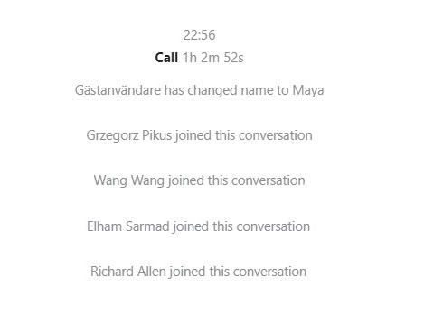

Evidence of team meeting participation
Screenshots captured on skype
Our team communicated primarily on Whatsapp and held team meeting via a team group setup on Skype.
The Screenshots below were captured from Skype to document the time and length of our team meeting. Most of our team meeting start between 4pm to 6pm Uk standard time which for Wang Wang (in Singapore) and myself in Guangzhou, China was 11pm to 1am. The team meetings usually lasted one to two hours. Every one always attended and contributed.
The project was complicated to plan and execute. We spent early meetings to discuss the project so every one was eventually on the same page about what was required for the project and what tasks needed to be worked on. Whilst later meetings were focused on the actually details of the code and structure of the API, the preparation for the team demonstration and the final piecing together of the project and the final submission.
